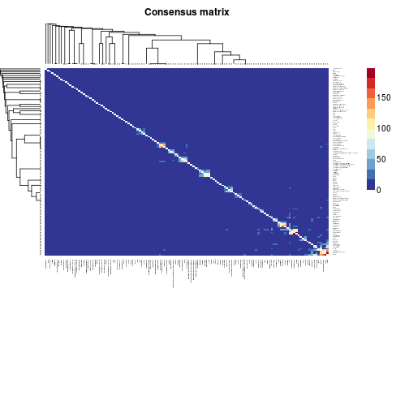

geneValues(object, ...) geneValues(object, ...) <- value geneIds(object, ...) geneIds(object) <- value geneIdType(object) geneIdType(object, verbose = FALSE) <- value annotation(object, ...) annotation(object, ...) <- value details(object) incidence(x, ...) connectivity(object, ...) nmf(x, rank, method, ...) S4 (MarkerList,character) `annotation`(object, ..., check = TRUE) <- value S4 (MarkerList) `show`(object) S4 (MarkerList) `details`(object) S4 (MarkerList) `geneValues`(object, unlist = FALSE) hasValues(object, ...) marknames(object, ...) S4 (vector) `marknames`(object, simplify = TRUE) S4 (list) `marknames`(object, unlist = TRUE, ...)
TRUE, and the marker list already has associated
annotation package(s), then the new annotation package(s)
are required to be installed, and the user will be asked
for permission to install them if they are not
(interactive mode only).FALSE) or as a
vector.simplify=FALSE), or only the
ones associated with a TRUE value.nmf,matrix,matrix,ANY.
If rank is a numeric vector with more than one
element, e.g. a range of ranks, then nmf
performs the estimation procedure described in
nmfEstimateRank.function or list object. See their
descriptions in section Methods.
If method is missing the algorithm to use is
obtained from the option
nmf.getOption('default.algorithm'), unless it can
be infer from the type of NMF model to fit, if this later
is available from other arguments. Factory fresh default
value is ‘brunet’, which corresponds to the
standard NMF algorithm from Brunet2004 (see
section Algorithms).
Cases where the algorithm is inferred from the call are
when an NMF model is passed in arguments rank or
seed (see description for
nmf,matrix,numeric,NULL in section
Methods).a character vector, usually of length 1 but possibly longer.
The S4 generics geneValues and geneValues<-
respectively return and set the values associated with
each gene in a gene set.
geneIds returns all gene identifiers in a
MarkerList object as a standard list.
annotation and annotation<- respectively
extract and set the annotation string from a
MarkerList object, i.e. the name of
Bioconductor annotation package(s) relevant to convert
marker identifiers into other IDs.
hasValues tells if a marker list contains numeric
values, e.g. specificity scores.
marknames is similar to geneIds but by
default returns the all marker names unlisted, i.e. as a
character vector.
signature(object =
"MarkerList"): Extract name of the annotation package
from a marker list.
signature(object =
"GEDdata_entry"): annotation gets the name of the
annotation package(s) relevant for the data.
signature(object =
"MarkerList", value = "character"): Sets the name of the
annotation package associated to a marker list.
signature(object =
"MarkerList", value = "NULL"): Reset the annotation
package associated to a marker list
signature(object =
"MarkerList"): Computes the connectivity matrix of each
set (i.e. cell/tissue type) of a marker list, i.e. the
matrix whose entries are the number of features in common
between each pair o cell type.
signature(object = "MarkerList"):
Shows more details than the regular show method.
signature(object =
"MarkerList"): Returns the type of gene identifier used
in a marker list.
signature(object =
"MarkerList", value = "NULL"): Sets the type of gene
identifier used in a marker list to
NullIdentifier().
signature(object =
"MarkerList", value = "character"): Sets the type of
gene identifier used in a marker list to a given value.
signature(object =
"MarkerList", value = "GeneIdentifierType"): Sets the
type of gene identifier associated with a marker list to
a given GeneIdentifierType-class object.
signature(object =
"MarkerList"): Returns the values embedded in a
MarkerList object.
signature(x = "MarkerList"):
Computes the incidence matrix of each feature in each set
(i.e. cell/tissue type) of a marker list.
The matrix is computed by converting the
MarkerList object into a
GeneSetCollection object, for which a
method incidence exists in the
GSEABase package.
signature(x = "MatrixData", rank =
"MarkerList", method = "ANY"): Calls an NMF algorithm
using a MarkerList object, whose length defines the
factorization rank. The actual MarkerList object is
passed down in argument data.
# get marker Idsm <- rMarkerList(3, names=TRUE)geneIds(m)$Type1 [1] "Marker.1" "Marker.3" "Marker.2" $Type2 [1] "Marker.9" "Marker.5" "Marker.7" "Marker.4" "Marker.8" "Marker.6" $Type3 [1] "Marker.12" "Marker.18" "Marker.16" "Marker.17" "Marker.11" "Marker.15" "Marker.13" "Marker.14" "Marker.10"# get attached valuesm <- rMarkerList(3, values=TRUE)geneValues(m)$Type1 Marker.1 Marker.2 Marker.3 0.8380698 0.1450309 0.9227744 $Type2 Marker.4 Marker.5 Marker.6 Marker.7 Marker.8 Marker.9 0.08689466 0.68606624 0.96765137 0.63654410 0.42051527 0.80513973 $Type3 Marker.10 Marker.11 Marker.12 Marker.13 Marker.14 Marker.15 Marker.16 Marker.17 Marker.18 0.26038751 0.65711832 0.58254836 0.64320725 0.02520756 0.06435620 0.98084656 0.93940564 0.19708425marknames( rMarkerList(3) )Type1 Type1 Type1 Type2 Type2 Type2 Type2 Type2 Type2 Type3 Type3 Type3 Type3 Type3 Type3 Type3 Type3 Type3 4 13 17 2 7 9 10 14 16 1 3 5 6 8 11 12 15 18marknames( rMarkerList(3, names=TRUE) )Type1 Type1 Type1 Type2 Type2 Type2 Type2 Type2 Type2 Type3 Type3 "Marker.1" "Marker.3" "Marker.2" "Marker.7" "Marker.8" "Marker.4" "Marker.5" "Marker.6" "Marker.9" "Marker.13" "Marker.15" Type3 Type3 Type3 Type3 Type3 Type3 Type3 "Marker.12" "Marker.11" "Marker.16" "Marker.17" "Marker.14" "Marker.10" "Marker.18"marknames( rMarkerList(3, values=TRUE) )Type1 Type1 Type1 Type2 Type2 Type2 Type2 Type2 Type2 Type3 Type3 "Marker.1" "Marker.2" "Marker.3" "Marker.4" "Marker.5" "Marker.6" "Marker.7" "Marker.8" "Marker.9" "Marker.10" "Marker.11" Type3 Type3 Type3 Type3 Type3 Type3 Type3 "Marker.12" "Marker.13" "Marker.14" "Marker.15" "Marker.16" "Marker.17" "Marker.18"# connectivity matrix of marker setsvg <- MarkerList('VeryGene')co <- connectivity(vg)# plot as a conensus matrixconsensusmap(co)